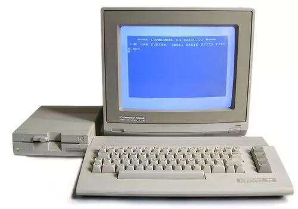
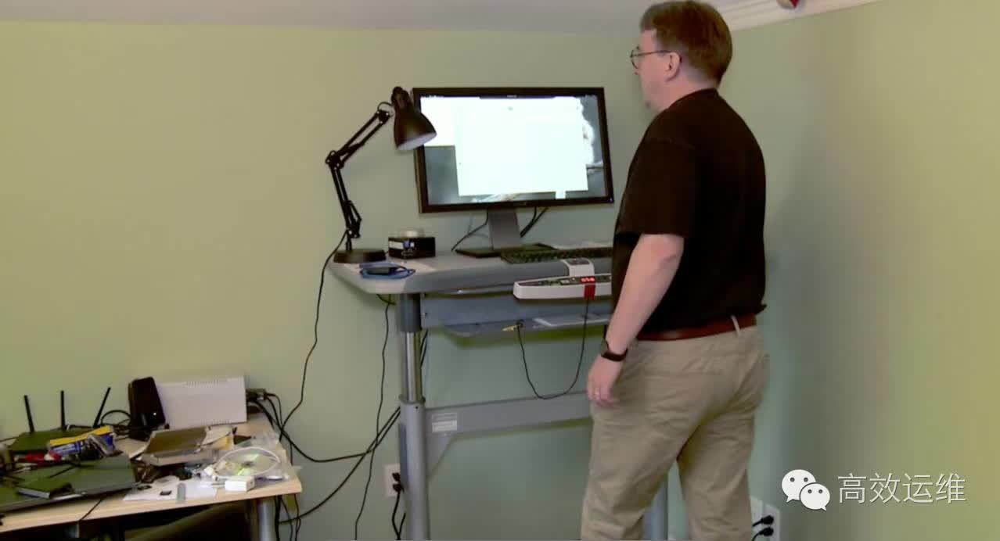

摘自微信公众号
你知道Linux系统有多牛吗？
迄今为止，在全球范围内：
80%以上的智能手机用的都是基于Linux内核的Android系统。
全球超级计算机排名前500中有98%都在用Linux，包括中国制造、世界超算第一的神威太湖之光。
全球大部分证券交易市场都在用Linux，包括纽交所、纳斯达克、伦敦证券交易所、东京证券交易所等
75%的云计算企业报告平台都用Linux
全球主机行业有33.8%的服务器都用Linux，而Windows 系统服务器只占7.3%。
包括亚马逊、易趣网、沃尔玛等电子商务平台都在用Linux……
换句话说，当今世上大部分的软件和服务都运行在Linux 操作系统之上，各种云计算、大数据、移动互联网，说起来吊炸天，但如果没有Linux，一切都是浮云。
但你肯定想象不到，如此牛到天际的系统却是李纳斯·托沃兹（后文简称“李纳斯”）在经历各种纠结与挣扎之后的无奈发明。
酷爱编程的Linux之父
李纳斯1969年出生于芬兰赫尔辛基，十岁时因外祖父是大学统计学教授的缘故，得以接触计算机。那是一台Commodore VIC-2，在当时为世界上第一批廉价的8位家用电脑。这台电脑除了用Basic语言写程序之外别无它用。起初他只是将外祖父写在纸上的程序录入电脑，但是他天资聪颖，喜欢钻研，帮祖父录完程序后，就开始阅读电脑手册，写里面的示范程序，示范程序写完了，就自己编写程序。

一段时间后，他又开始琢磨电脑是怎样工作的，以及思索如何能让电脑运行得更快……
就这样三年过去了，在其他孩子都在滑雪、踢足球，进行各类户外游戏时，李纳斯却觉得外公的电脑更有意思了。
这时候的他已经进入了青春期，同龄的男孩子都在被窝里偷偷看playboy杂志，而他却总是在跟妈妈道完晚安之后再偷偷地从床上爬起来，然后打开电脑编程。
编程令他废寝忘食。他的妈妈逢人便说李纳斯是个很好养的孩子，一台电脑加一些意大利面条，就能让他心满意足。就是对女孩子不感兴趣这一点让他的父母非常担心。
他的爸爸给他买了一些模型飞机、轮船、汽车、铁路和模型火车等好玩的玩具，但这些东西远远比不上电脑对他有吸引力。他的父母并不限制他玩电脑，但是在对他的管教方面，却多了一个杀手锏，若是他不听话，只要剥夺他玩电脑的权利，他立马就怂。
上高中后，他的数学成绩非常优秀，那时的女孩子都特别希望能得到“数学天才”的辅导，于是他的父母就发现了让他对女孩子产生兴趣的办法，隔三差五催他带女孩子回家来辅导。
而他自然也是照做了，只是即便这样，直到高中毕业他也没弄明白同学间说的“深度爱抚”是什么意思。为此他特意花了不少时间照顾邻居家一只十五磅重的猫，然后认为“深度爱抚”也没有什么了不起的。
快乐不能久留，纠结与无奈常伴左右
后来Commodore VIC-2李纳斯已经玩得很溜了，便想买一台下一代的电脑。为此他攒了圣诞节和生日时父母给的奖励金，参加了赫尔辛基公司清洁队，当过邮差，再加上学校发的奖学金，在1987年的时候他成功地买下了一台Sinclair QL。
这是世界第一台32位家用计算机，采用摩托罗拉68008处理器，操作系统是Q-DOS。它的BASIC 语言非常先进，图形显示也不赖，且能进行多重任务处理。他用之做了大量编程，还编写了工具性程序。
但是令他无比纠结的是：VIC-2只有一个只读操作系统，无法重编程，而且虽说能进行多重任务处理，但在任何时候都会出现死机，也因为没有保存措施，只要一个任务出现差错，整个机子就死掉了。此外，给这台电脑购买配套设备是个无解的难题，因为他压根儿就找不到Sinclair QL电脑的产品目录！
第二年，他考上了赫尔辛基大学，主修计算机，数学和物理是辅修。这一年他没怎么写程序。主要是Sinclair QL毛病太多，让他没了心情。大学第二年，他有两个选择：要么在部队服八个月的兵役，要么从事一年的社会服务工作。他选择了去服兵役，因为他觉得在军队服役能更好玩一点。
服兵役也有两个选择：当一个普通大兵，服满要求的八个月或是去一所军官培训学校，当十一个月的军官。他选择了后者，因为他觉得当一名军官可能会更有意思。
1986年的时候386芯片横空出世，它在功能上完美地取代了68020，PC机开始受追捧。而等到1990年的时候，大规模生产使其价格大幅下跌，这让手头拮据的李纳斯看到了希望。
这一年，恰好他服完兵役回校，当时UNIX操作系统因稳定而强大的功能在学术界掀起了的风潮，学校也在这一年引入了UNIX系统，对此他兴奋不已。
虽然他没钱买386，但是他可以让自己的Sinclair QL通过终端仿真进入大学的UNIX电脑，等到有了足够的钱再买自己的也不迟。而UNIX系统果然没有令他失望，他重新在电脑这里找到了快乐。
1991年新年，他以分期付款的方式购买了一台组装PC机。内存他选择了4兆，最大的；CPU他选择了33 兆赫，最好的。不过这台电脑自带的MS-DOS 操作系统让李纳斯很是无奈，因为这套系统甚至无法利用386芯片极大提升的性能。曾经沧海难为水，享受过UNIX的美好，叫他如何还能容忍DOS的low？
他打心眼里想给这台电脑装UNIX，但不幸的是（却是世界之幸），UNIX太贵了，他完全负担不起！当时MINIX软件，作为UNIX的一个小型克隆也很受人们的追捧，而且价格比UNIX要低很多，他便退而求其次，购买了MINIX软件。而正是他的这一举动，最终促成了Linux后来的诞生！
MINIX软件从订购到拿到手李纳斯用了一个月的时间，但那时的他却感觉如同过了六年一般漫长，他花了大量时间去仔细了解它的功能和用途，最后他成功了解了它好的方面，却在同时也了解了它不好的方面。但最让他不能接受的是，MINIX的终端仿真做得太糟糕了。要知道那时的他只有依赖终端仿真，才能让家里的电脑模仿大学的电脑，从而享受UNIX的强大与稳定。这样的缺陷对他而言简直就是致命的！
在饱受一番折磨之后，他痛定思痛，最终决定：自己做一个终端仿真！
Linux 诞生！
这是李纳斯人生中的第一台PC，要做终端仿真，他需要学习很多东西。他从 BIOS 开始学习，了解 CPU 的工作原理，了解怎样写入显示器、怎样读键盘输入、怎样读写调制解调器……后来他想出两条独立的线程：一条线程从调制解调器读出，然后在显示器上显示；另一条线程从键盘上读出，然后写入调制解调器。
他写的最早的试验程序是使用一个线程将字母 A 写到显示器上，另一个线程写B。最后他就能改变由一连串 A 和一连串 B 组成的两个线程，使数据一个读自调制解调器，再写入显示器，另一个读自键盘，再写入调制解调器。到这时，他的终端仿真程序正式宣告制作成功！
成功之后的那种发自内心的喜悦自然难以言喻。凭借自己的终端仿真器，他经常登录学校的电脑上，查阅电子邮件和参加 MINIX 讨论组。但是好景不长，他很快又发现了一个新问题，那就是：他无法下载和上传东西！也就是说，他必须能够向磁盘里保存东西。若要实现这个功能，他的终端仿真器必须装个磁盘驱动，外加一个文件系统驱动！
这个时候，即便李纳斯极度渴望这个功能，也未免有些泄气了，因为做这些实在是太麻烦了！也不值得。
只是没过多久他就改变了主意，因为他发现：除此之外他没有什么可做的！大学课程非常简单，无需费太多的心思，同学聚会也让他提不起精神，而搞驱动程序的工作虽然很麻烦，但却很有意思！
于是，他开始了写磁盘驱动程序的艰苦生涯。每天睁开眼睛后第一件事——编程，饿了就嚼饼干，嚼完继续编程，困了就睡会儿，醒来继续编程，洗澡也就冲冲了事，冲完澡继续编程……没了白天和夜晚，分不清周末还是工作日，电脑之外的世界几乎与他绝缘，在这场马拉松式的编程中，某一天他突然意识到：这项工作已经不再是优化一个终端仿真器，而是再造一个操作系统！
Linux 操作系统就是这样开始的，而他的试验程序则变成了终端仿真组合程序。
又经过数个月的努力之后，外壳程序开发完成，这个时候的他感觉便如创世之时的上帝，只待说出“要有光”一样执掌一切。当他把外壳程序移到一个他为新的操作系统所建的特别区域中后，一个新的操作系统宣告了诞生！他将其命名为“Linux”！
然后，他毫不犹豫地就将Linux发布出去了，因为他一直有与人交流程序的习惯。
在那时的PC世界中，有一个有关软件共享的传统，就是你下载了一个程序，就应该给作者寄回十块钱左右的回报。但李纳斯并不想要钱，他只想要明信片，因为与钱相比，他更想知道都有哪儿的人在使用 Linux，结果他收到了逾百万张明信片。
而他当初买电脑时的欠款则在一个朋友的帮助下，成功地从一项网上募捐行动中得到了解决……为嘛这事儿听起来这么有喜感？
但是这时候的Linux并未脱离MINIX而存在，似乎上帝对这样的结果仍不满意，便推了他一把：他在接下来的某一天出现操作失误，将MINIX分区破坏了！这个时候他可以选择重装MINIX，也可以通过完善Linux来彻底取代MINIX。他选择了后者，因为他觉得Linux已经足够好。
于是，从这时起，人们开始用Linux来做些事了。
因为开源的缘故，Linux 的用户开始与日俱增，获得了巨大的发展，世界各地的程序员们每天都在共同分享彼此提出的修改建议。
从1991年开始至今，Linux内核由10239行代码增加到了近1千万行代码，其中只有2%出自李纳斯之手。而且每天仍会新增约4752行代码，且有1671行代码会做出变更。
李纳斯喜欢有这么多的人给他从事这个事业的动力，他曾认为自己已接近于完成它了，但却始终没有真正做到这一点。人们一直给李纳斯更多继续的理由，以及更多困扰的棘手难题，这使得继续完善 Linux 变得更为有趣。否则，他可能早就干别的事情去了。
这并非耸人听闻的言论，而是李纳斯亲口所说。
生活的终极目标是快乐
李纳斯并不是离不开电脑，也不是离不开Linux。
早年上高中的时候，就因为感到有些课程比较有趣，比方说影响经济的因素，季风及季风成因等，可以让他放下了电脑去啃书本。
在与现任妻子塔芙同居的最初两周，他甚至都没有动过一下电脑，但他也并不为离开电脑而感到难受。
大学时期服兵役一年，离开电脑一年之久，他也没有对其有任何想念。
他曾花了数小时为他的宝马Z3选择合适的颜色而苦思冥想。原因无他，仅仅是觉得有意思而已。
在他看来，生活的进化过程主要分为三个阶段：生存、社会秩序和娱乐，而娱乐是生活的最高形式。他说，“你可以为事业而奋斗，然而最终，生活的终极目标是快乐。”
编程是他的乐趣，写出Linux也是乐趣使然。在无数次追求快乐而不得的纠结与无奈过后，Linux才得以成功面世。他无心做出一个举世瞩目的产品，也无意打造自己的商业帝国。微软把Linux视为Windows操作系统最大的竞争对手，而Linux的拥趸则无时不刻不在网上发言声称：Linux终将取代Windows。
但他却丝毫不为此挂心，每天在自己的卧房里（很难想象那里就是举世瞩目的Linux全球总部）做着自己感兴趣的事——为Linux编程。

-END-